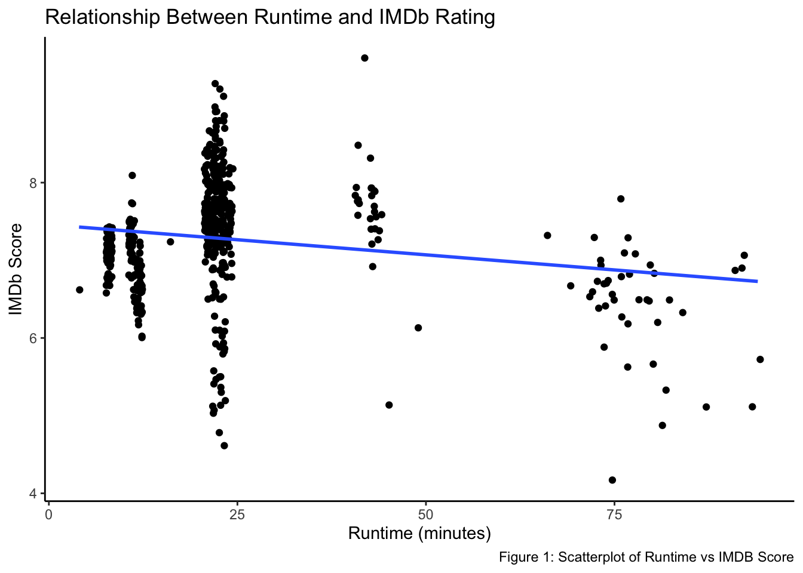
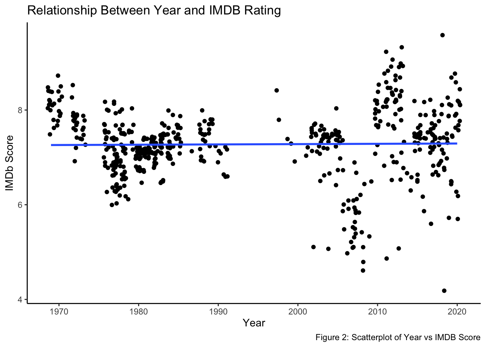
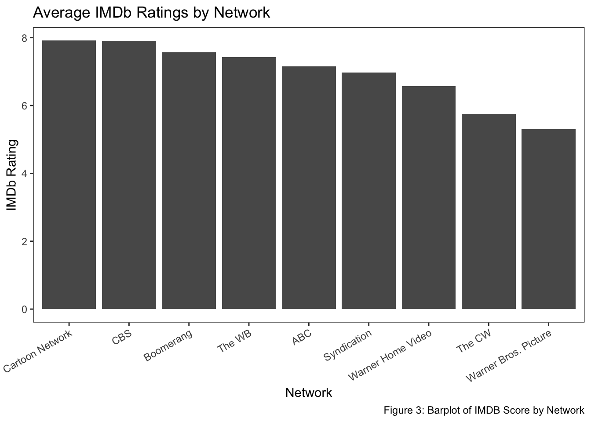
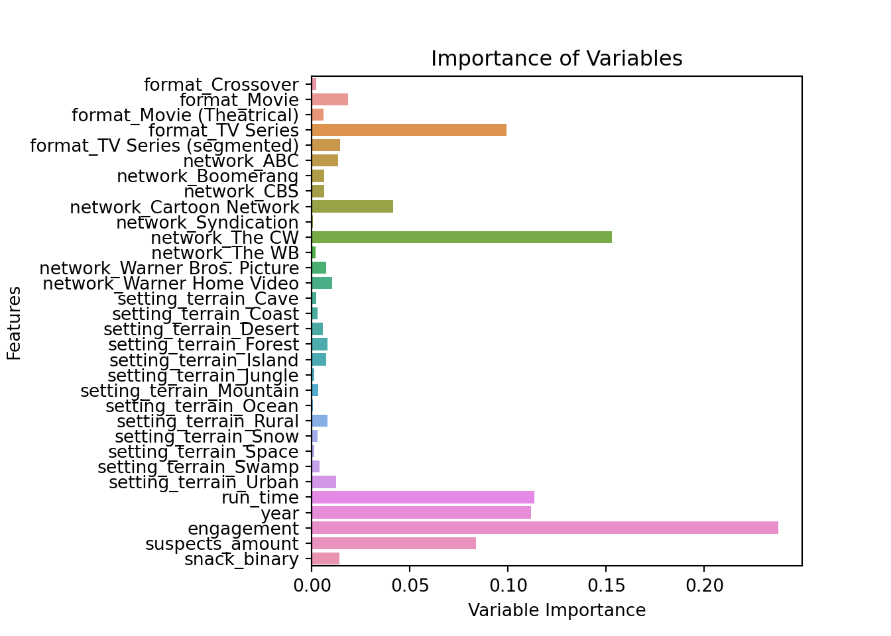

Written Report: Scooby Doo TV Episodes & Movies
Introduction and Data
Motivation and Research Question
Over the years, the iconic Scooby Doo name has been associated with a myriad of products in television, film, video games, comics, and merchandise. It is listed among the most profitable media franchises in the world, having grossed a total of 4.69 billion dollars in revenue since its release in 19691. From the beloved original “Scooby Doo, Where Are You!”, to the recent “Velma” sitting as the 3rd lowest-rated television show on IMDb2, the reception of these works have varied dramatically. This begs the question of what factors influence the ratings of the movies and tv shows in this franchise. In this analysis, we will be investigating:
How can release and content details of Scooby Doo media be used to predict their audience rating?
We expect that tv episodes and shorter run-times will have higher ratings because the premise of Scooby Doo works best in shorter segments, which is how it was originally conceived. Additionally, most of the movies are probably direct-to-DVD films with low budgets and smaller audiences. We also think that the presence of classic elements like Scooby Snacks will by an indicator of higher ratings because these are staples of the franchise. However, we do not think that the variables representing key aspects of the contents, like setting, will have a significant impact on the prediction because they do not determine the quality of the movie/episode. One of the most important variables will likely be release year because modern audiences will have feelings of nostalgia related to older works and rate them well.
Data Manipulation
The data we will be using comes from data.world, an online platform for data catalogs3. It was collected 2 years ago by a user named Amber Thomas through a combination of manually viewing the material and referencing outside sources like IMDb and Scoobypedia. Each case represents a film or tv episode in the Scooby Doo franchise. The variables we will be using represent the format, engagement, year of release, network, runtime, setting, number of suspects and whether or not Scooby snacks are present in the episode in order to predict audience rating via IMDb.
First, we took the subset of columns that we wanted to work with. We began cleaning our data by removing all NA values from the data frame, since there were only around 20 inputs and we didn’t want them to obstruct the study. These missing values were partially due to the fact that the newest Scooby Doo movies did not have their IMDb scores included because they were likely still actively being rated. There was also a wide variety of variable inputs for the Scooby Snack column, from simple numeric count of snacks to inputs such as “a wheelbarrow.” Therefore we made the variable binary, where it was 0 if there were no Scooby Snacks, and 1 if there were any. We had the release date in month-day-year format in a column. We simply wanted the year of release to function as a simple numeric variable, so we pulled the year value and made it its own column. Additionally, we made sure that numeric variables, like IMDb rating, were treated as a numeric values and that categorical variables were categorical. Finally, there were a few categories that had 1 instance and causes errors when they were randomly assigned to the test set but not the training set. To remedy this, we dropped the networks that only had one observation, and dropped the unique instances of ‘Moon’ and ‘Air’ in the setting_terrain column. In the end, we went from 603 to 576 cases.
The format details what kind of media the input is, such as movies or tv shows. Engagement details how many reviews were left for the content on IMDB, year of release is what year the media piece came out and network is what network released the content. Run time details how long the content is in minutes, the setting is where the primary location of the episode took place (a swamp, desert, forest, etc). Suspects amount is again self explanatory and is the amount of people who are suspected of committing the crime. The binary variable for scooby snacks just indicates if the classic treat is in the media content at all. Finally, the outcome variable is the average rating of the content left by a user on IMDb. We included these variables because they had a reasonable set of options, and we wanted a balance of information about the diegetic content of the episode and the meta details about its release. All of the variables except IMDb rating will be included in our model creation, and IMDb rating will be our outcome variable.
Methodology
Visualizations
We started our process by looking at how some of our key variables may be related to the outcome variables, and see if there are any clear patterns. Below are 3 visualizations to help us show and possibly explain some of the phenomenon we discussed previously.

This plot indicates a downward trend in IMDb ratings as run-time increases. It can also be seen that there are certain run-times where observations tend to cluster, which makes sense since there are certain expectations for how long movies and TV episodes are.

Here we see the relationship between rating and year. We are surprised to see very little difference among IMDb score across the years the content was released.

Finally, we can see some differences among the networks in the average IMDb rating for their content. For example, the CW and Warner Brothers Picture have noticeably lower average ratings than Cartoon Network. We will examine the significance of the potential relationships we visualized through machine learning.
Developing Models
| Mean Score | Minimum Score | Maximum Score |
|---|---|---|
| 7.276042 | 4.2 | 9.6 |
Our outcome variable (IMDb rating) ranges from 4.2 to 9.6 out of 10 stars, with the average around 7.3. In order to account for these differences, we will test multiple prediction models on the data. We begin our analysis by using a simple linear regression model to predict rating for Scooby Doo content. We chose this model because it is a good starting point to see how different factors may positively or negatively influence rating. This model predicts quantitative outcomes, and can handle a mix of categorical and numeric variables.
Next, we fit Ridge and LASSO prediction models using their internal cross-validation functions. These are regularization/shrinkage methods that will help us reduce variance and shrink the coefficient estimates towards 0 so that we can minimize less influential variables. This is especially prominent in the LASSO model, which will drop certain features and isolate the key variables.
The next model we try is the Random Forest Regressor as a different way of estimating predictions to see if a tree-based decision model would be more accurate. This method uses a collection of decorrelated decision trees, and will help us by providing us information about the relative importance of each variable. We will also be using grid search cross validation to find the optimal parameters and optimize model performance. For all cross validation practices, we started with a broader range of values before conducting a narrower search to get more precise parameters.
Results
In order to evaluate the accuracy of our prediction models, we calculate each MSE (mean squared error) on the test set.
OLS MSE: 0.406560Ridge MSE: 0.395371LASSO MSE: 0.385938Random Forest MSE: 0.252638Our Linear model had an MSE value of 0.4065, which is not particularly strong. This follows our expectations, as picking variables and assuming linearity in the outcome usually breaks down for more complex problems and larger models. The Ridge and LASSO models had test MSEs of .3954 and .3859, respectively. These models performed slightly better, but are still not ideal. Finally, our random forest MSE is 0.2526, indicating it is our best model at predicting ratings on unseen episodes.
We also look at the variable importance plot of the Random Forest model and variable coefficients of the LASSO, Ridge, and OLS models to understand the relative influence of each factor.
| Feature | OLS Coef | Ridge Coef | LASSO Coef |
|---|---|---|---|
| format_Crossover | 0.0630485 | 0.0025270 | 0.0000000 |
| format_Movie | -0.1937846 | -0.1286398 | 0.0000000 |
| format_Movie (Theatrical) | -0.2889806 | -0.1600919 | 0.0000000 |
| format_TV Series | 0.5212610 | 0.4514698 | 0.5757246 |
| format_TV Series (segmented) | -0.1015442 | -0.1652651 | 0.0000000 |
| network_ABC | -0.0806022 | -0.1046507 | -0.0923616 |
| network_Boomerang | 0.0860125 | 0.1868764 | 0.0000000 |
| network_CBS | 0.4649877 | 0.4029351 | 0.3304430 |
| network_Cartoon Network | 0.5148331 | 0.5820158 | 0.4059324 |
| network_Syndication | 0.9740139 | 0.5899261 | 0.0000000 |
| network_The CW | -1.8972266 | -1.7257203 | -1.8541374 |
| network_The WB | -0.1228780 | -0.0641037 | -0.0866200 |
| network_Warner Bros. Picture | -0.2889806 | -0.1600919 | 0.0000000 |
| network_Warner Home Video | 0.3498401 | 0.2928132 | 0.0000000 |
| setting_terrain_Cave | 0.1748973 | 0.1596717 | 0.0000000 |
| setting_terrain_Coast | -0.0216918 | -0.0136948 | 0.0000000 |
| setting_terrain_Desert | -0.0964246 | -0.0963111 | 0.0000000 |
| setting_terrain_Forest | -0.0436223 | -0.0393127 | 0.0000000 |
| setting_terrain_Island | -0.0742547 | -0.0653291 | 0.0000000 |
| setting_terrain_Jungle | -0.0814382 | -0.0770749 | 0.0000000 |
| setting_terrain_Mountain | 0.0226976 | 0.0069918 | 0.0000000 |
| setting_terrain_Ocean | -0.0416401 | -0.0440601 | 0.0000000 |
| setting_terrain_Rural | 0.0046755 | 0.0068674 | 0.0062553 |
| setting_terrain_Snow | -0.0595571 | -0.0575327 | 0.0000000 |
| setting_terrain_Space | 0.2023920 | 0.1537429 | 0.0000000 |
| setting_terrain_Swamp | 0.0723099 | 0.1201130 | 0.0531598 |
| setting_terrain_Urban | -0.0583436 | -0.0540715 | -0.0149474 |
| run_time | -0.2486801 | -0.2466754 | -0.1593155 |
| year | -0.0212723 | -0.0797516 | 0.0000000 |
| engagement | -0.0156911 | -0.0356116 | -0.0705929 |
| suspects_amount | 0.0257383 | 0.0334535 | 0.0000000 |
| snack_binary | 0.0062100 | -0.0160481 | -0.0012061 |

By looking at the coefficients, we gain insight into which variables are most related to the Scooby Doo content’s IMDb score. For example, all models agree that the CW network has the greatest negative connection with the rating, and they also all agree that being a TV show is a significant indicator of a good rating. Most of the terrain coefficients were shrunk to 0, indicating that these features are less significant. Furthermore we can see a variable importance plot that confirms some of our above arguments, that setting is not particularly important and that runtime and release year carry a lot of weight in how a person rated the content. The engagement variable was even more important than expected, as it is the most important variable according to the chart. This could imply that people in general are more likely to leave reviews of something they had strong opinions about, and that producers may want to find a way to increase this online engagement to boost ratings.
Discussion
From our analysis, we concluded that the random forest model is the best for our question because it most accurately predicted the scores of the test set out of the ones we tested. We also found that the CW network and TV series format are significant variables that predict lower and higher scores, respectively. Additionally, the popularity of the episode/movie (and thus engagement) is the most influential factor on rating. However, there were certain flaws in our analysis. First of all, the data we are analyzing was manually collected by one person, and may contain subjectivity and errors. Additionally, we dropped 4% of the observations, which is a minor but potentially influential exclusion. In the analysis, we could have also tried more prediction models or tried different parameters to reinforce our results and see if we could find a more accurate model.
In our training data, we ran into issues as some of the variables we were initially interested in studying had too many NULL values to conduct analysis on. This led to us changing which predictors we put in train-test-split data and subsequently the model. As a result, there could be some bias within our analysis as they are the variables we picked specifically to be easier to research. Moreover, we had some variables that only had a couple occurrences in our original data set so when they were randomly assigned to our test set but not our training set for the model, we received some errors as it did not know how to process them. For this reason, there were some random states that did not work, and we had to drop some rows from our data. Finally, our data only had 576 observations after cleaning, which is not that many compared to the size of other data frames we have used in this course. This small number of observations is now ideal for prediction methods, especially when split between the training and test sets. Also, considering some of the variables only had a few outcomes as stated above, this could lead to some “noise” or skewing in our data, given it does not have many observations. This makes it difficult to generalize from our model estimates.
If we were to start the project over, we would most notably remove the setting_terrain variable, as there were a lot of unique variables within the column that reduced clarity and did not influence the model much. This could lead to limiting the utility of our model. Therefore we perhaps would have been slightly more judicious in choosing variables, or use statistical methods for variable selection, if we were to do it again. Additionally, we found a solution to the issue of having unique variable values in the test set but not in the training set. By giving the OneHotEncoder in our preprocessor the argument handle_unknown = 'ignore', we would be able to use more of our data instead of dropping certain observations. Furthermore, while it would not have been possible for our study, if we were to conduct a similar study, we would take into account the fact that the data was relatively small and potentially contains errors. Sourcing our own data was not possible here, but could have been useful in another study similar to this.